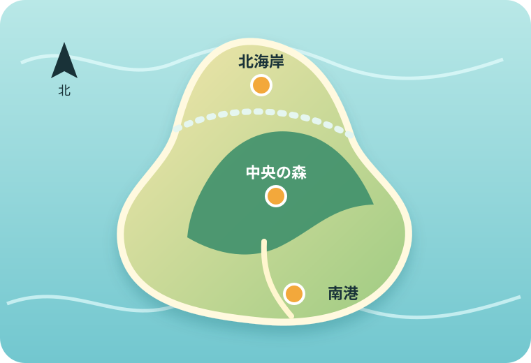

白波と海鳥の海岸
白い崖が続く海岸で、岬への行き方、観察できる生き物、安全に歩くための注意を紹介します。
北海岸の案内を見るHoshinagi Island Field Guide
星凪島は、潮風の北海岸、緑深い中央の森、暮らしが集まる南港からなる架空の島です。気になる地域を選び、自然観察の小さな旅を始めましょう。

Three Areas
白い崖が続く海岸で、岬への行き方、観察できる生き物、安全に歩くための注意を紹介します。
北海岸の案内を見る島の中央に広がる森で、散策路、架空の植物、森を守るためのマナーを紹介します。
中央の森の案内を見る島の玄関口で、港の施設、地元の食べ物、季節の催しを紹介します。
南港の案内を見るこのサイトは、静的HTMLの構成、GitHub Pagesでの公開、サイト内検索を学ぶために作った見本です。星凪島と、登場する地名・施設・生物・行事はすべて架空です。